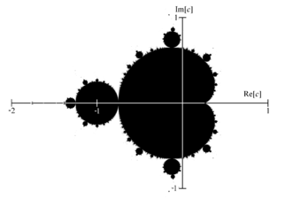
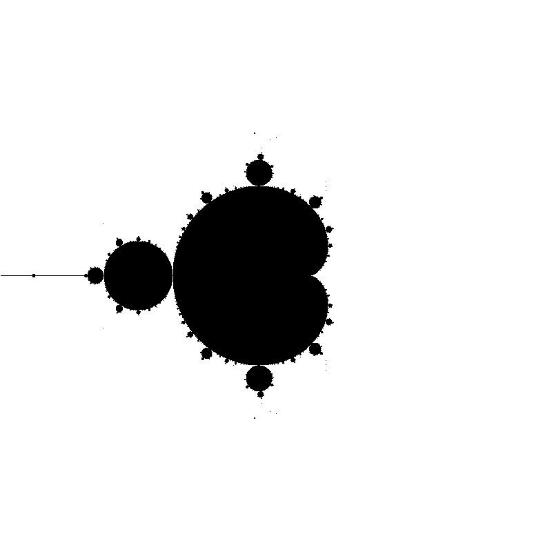

You will write a program that renders the Mandelbrot Set on a section of the complex plane, as follows:

Please follow the instructions on the main page to install the required compilers on your system.
Your program has to compile to an executable named "mandelbrot" and take in four command line arguments, so that is can be used as such:
./mandelbrot x y s output.png
(x, y) is the minimum corner of the output square in complex space
s is the side length of the output square
output is the filename of the resulting PNG image.
This should produce a single square PNG image of 800px by 800px, a rendering of the section of the complex plane described by (x,y) and s.
The Mandelbrot set is a set of complex polynomial functions of the form f(z) = z*z + c, where c is a complex-valued parameter. This complex-valued parameter c is what we characterize a specific polynomial on, and it is this c that we relate to a pixel value on our rendering. Any point c on the complex plane is a point in the mandelbrot set if we iterate the function f(z) = z*z + c from z = 0 and we find that z does not become infinite.
Calculating the mandelbrot set requires that you square a complex number. We represent complex numbers in this project as their two parts - real and imaginary - thus operations on them need to be performed by hand. Recall that squaring a complex number (x+iy)^2 = (x^2 - y^2) + (2*x*y)i
From this understanding of the mandelbrot set (and a quick glance at Wikipedia) we can come up with an algorithm to draw the mandelbrot set:
For each pixel (i,j) on the image {
calculate the point (x0, y0) on the complex plane that this pixel represents.
start with the complex point x + iy where x=0, y=0;
iterate until an exit criterion has been met or we reached our maximum iterations {
calculate the new (x,y) values by applying f(z) = z^2 + (x0 + y0i)
}
if the point does not escape to infinity, color the pixel black.
if the point does escape to infinity by our approximation, color it white.
}
Since we are calculating an infinite series, we need to approximate the result by cutting off the calculation at some point. If a point is inside the mandelbrot set, we can keep iterating infinitely. To avoid this, we set a limit on the maximum iterations we will ever do. Choose this maximum value such that your picture looks like the example at the top of the page. If a point is not in the mandelbrot set, it will move beyond the confines of the (-2,-2) to (2,2) square within which the mandelbrot set lies. This is the other exit criterion - once the point we iterate on leaves this square, we know that it is not part of the mandelbrot set and thus escapes to infinity.
Extra Credit: We require that you render the Mandelbrot set in black and white, as the example picture above (black for points inside the set, white for points outside). We will award extra credit for color renderings based on interesting color schemes. For example, using the speed of divergence or the number of iterations are known to give impressive colors.
The skeleton code consists of a single file that currently uses the freeimage library to generate a monochrome PNG file. You need to have the freeimage library either installed as a system library, or follow this guide to link it against the skeleton code. You can find the FreeImage documentation here. For each operating system:
For mac users, an easy way to use freeimage is to install it using MacPorts. If you have macports installed on your system, you can install FreeImage using the command "sudo port install freeimage". This will place freeimage in your /opt/local/include and /opt/local/lib directories. We included there in the makefile's search path so this should automatically be recognized. If you need to build the library from source using the latest XCode, or you are running XCode, here is an updated makefile.osx that you need to use. Replace the current makefile.osx in the source directory.
For windows users, we included the .DLL from the FreeImage site. If it does not just build inside your Visual Studio Express, please make sure you are using the latest Visual Studio Express 2010, then attempt to follow the FreeImage guide linked above, and only if this fails, talk to the instructional staff.
For linux users, you can install freeimage through your package manager system by running "sudo apt-get install libfreeimage-dev". This should work out of the box, but if not, you need to update the makefile to include the appropriate include and lib dirs, or you can build freeimage from source and copy "libfreeimage.a" into the project directory.
If you prefer, you can use the PPM format rather than freeimage. In this case, you need to write a struct to store the pixel values, and a function to write the PPM format to disk. The format is described here and the details can be found here.
You need to submit both your results and source code. Your submission directory should contain:
Results: The text file results.txt should contain, on each line, the command to reproduce one of your resulting images, in the order listed above. You need to submit the four images these four commands produce. whole.png should be the entire mandelbrot set rendered from (-2,-2) with sidelengths 4. The other three images are of your choosing, zoomed into interesting sections (for example, look at the Seahorse Valley of the set).
Source: All your code has to be in a single file, and we need to be able to build this file by dropping it into our own build system.
The basic functionality should not need to use more than 20 lines of C++ code. We expect the whole.png image to look like this:
